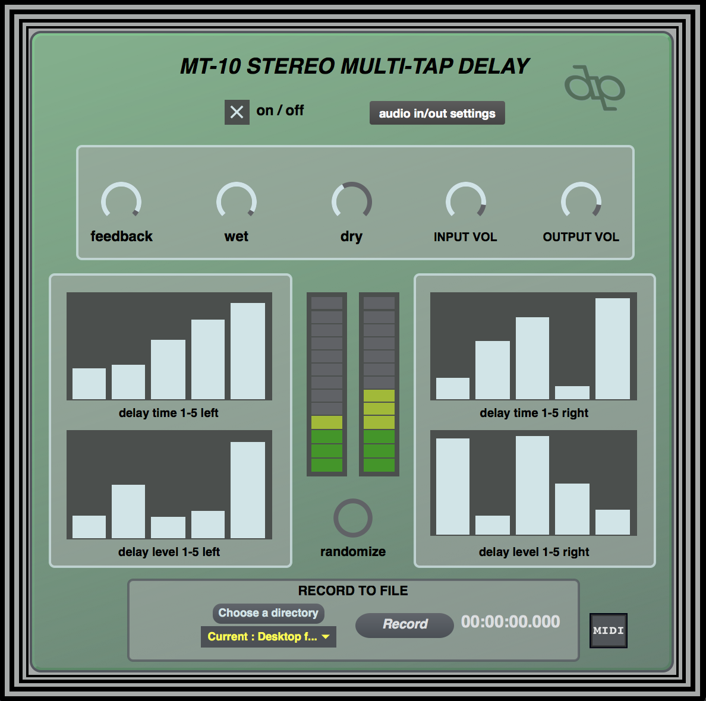

MT-10 Stereo Multi-Tap Delay is a non-linear delay/looping effect with independent control over the delay time and level for ten repetitions of the incoming signal, panned left and right. The interface encourages non-traditional delay techniques, and the effect can easily be "played" rather musically with minimal input. At the same time, precise control is easily attainable.
All parameters allow for MIDI control and are re-mappable, allowing for integration with hardware and other programs.
Warning: this one will default to your internal microphone and speakers unless another source is chosen - change it or embrace the feedback
download OS X app (via dropbox)